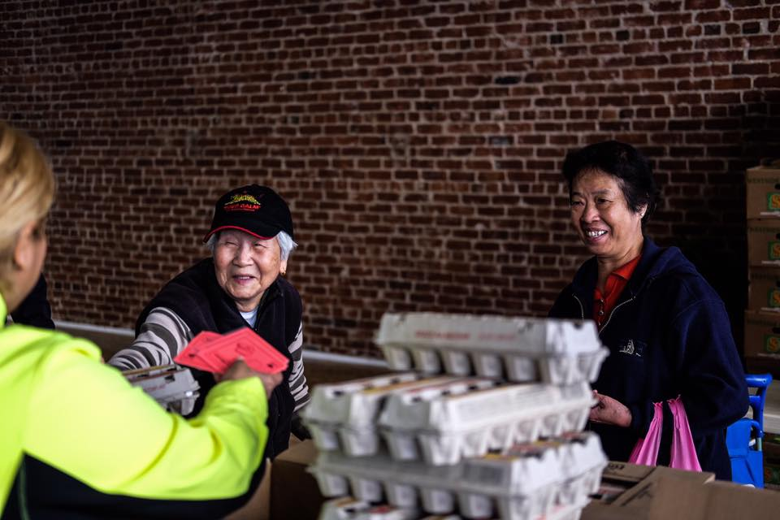

BY KELSEY VERRILL
“Now that I’m old don’t set me aside” cried the man after God’s own heart in Psalm 71. David knew what it was like to be close to God, and he also knew what it was like to feel alone. To feel abandoned. To feel set aside. A man who is known for dwelling in the presence of the Lord also faced with what it was like to experience the deterioration of this life, and possibly the abandonment of others because of it.
You see, it was never supposed to be this way. We are supposed to honor those who came before us. Celebrate their life. But I can’t help but think -- did David feel that way? Did David feel celebrated, known & loved by his community? Maybe he didn’t. Maybe this was why he needed this assurance from God. Who is forgotten in your life? Who is alone? I believe that it is the forgotten ones who need the most celebration.
Upon moving to San Francisco, I started coordinating our weekly Food Pantry here at YWAM. It’s been a favorite “yes” of mine and over the past 4 years, Thursday afternoons have made me rich. No matter what kind of day I’m having, seeing each precious patron during our weekly food distribution brings me genuine joy.
YWAM San Francisco has been running its food pantry for over 11 years here in the Tenderloin. We get the privilege of serving over 300 families (most of them over the age of 75) hailing from China, Vietnam, Thailand, Russia & the Northern Triangle of Central America. Just this past quarter we distributed 88,650lbs of food valued at $134,276! Our pantry exists to love our neighbors in a tangible way, but to be really honest - it’s usually them who love us most, serving our hearts with bear hugs and pockets full of candy. They understand generosity. They just get it.
Seniors make up around 20% of San Francisco’s population, which is about 161,777 people. Of that amount, about 16% are living below the poverty line right here in the Tenderloin. We are lucky enough to share our beloved Ellis Street with many of them and I am a better person because of it.
I admittedly have favorites, one in particular who came into the food pantry every week for 4 years. She wore a big blue floppy hat and we exchanged our Cantonese and English hellos. Our hugs broke the language barrier and we were always both so happy to see each other. On gloomy days, I’d make sure to walk past her retirement home up the street to wave to her through the window. You see, you don’t have to know everything about someone to love them. You just do it. You love them, you hug them, you extend a smile even when you don’t feel like it. That consistency builds trust and trust helps show the secure love of Jesus.
A few months ago, she missed a Thursday. You’ve gotta understand that this isn’t normal. To miss a Thursday is to miss out on an entire week of groceries. Our food pantry is a lifeline for many and not showing up usually means something is wrong. I had become quite apprehensive when week two passed and my friend didn’t come. Doing my best to believe the best, I panicked; Until in walked a familiar face. It wasn’t my floppy-hatted friend though they had the same eyes, smile & demeanor, this woman was younger; with no hat in tow.
I introduced myself to this familiar-looking stranger who informed me that she was the daughter of my beloved favorite. I asked her if her mother was okay, and in broken English, she shared with me that her mother had Alzheimer’s. She said it had gotten to the point where her mom didn’t even recognize her, thinking she was some type of nurse or caretaker. She then went on to tell me that her mother remembers this place (YWAM) and that it was one of the only places where she felt peace; where she remembered.
I think that’s Jesus.
The reason I tell this story is because the God of the Universe cares about this 90-something-year-old grandmother from China. He cares about the forgotten, jogging their memories until they find the Prince of Peace. Sometimes that is found within the walls of our drop-in center. Sometimes it’s found within the pallets of produce given out on Thursdays. Sometimes it’s walking to Trader Joes, or buying jeans with your mom. Whatever it is - Jesus is within it. He cares about how you spend your time; about who you intentionally serve. He shows up in that.
What would it look like for you to show up in your community for those who feel forgotten? I thought language barriers would hinder me from loving our food pantry neighbors, but it did not. My friend thought that her years of back pain of 5 years would never ever go away, but it did. Peter thought he would never get a chance to see his best friend after he betrayed him and was killed. He did. God is BEYOND our doubts and mustard-seed faith. He is the literal King of Kings. He is the God of Peace and Security. His safety protects us from our enemies and is even with us in the middle of our sickness. He remembers us when we don’t even remember ourselves. He shows up. Will you?
Volunteer today